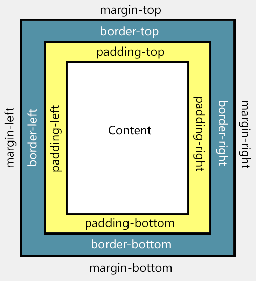

What is the difference between border, margin & padding?
For every element we create on a website we have a border (which is usually set to 0px unless you want the border to be visible).
The border is around the element itself, like an image you're wanting to add to your website. Let's use a picture of Lily as an example.
In this image there is nothing out of the ordinary, besides we know there is an invisible border line framing the image. This border line would be 0px in our CSS code.
border: 0px;
Now, let's add a margin.
In order to make the changes more visible I have created a yellow border around Lily, which is now surrounded by a red Margin. As you can see, the Margin has created space between the border and the outer elements around the image (like this text!).
border: 3px;
border-color: yellow;
margin: 20px (top) 20px (right) 20px (bottom) 20px (left);
Now, let's say we would like to make some space between the yellow border and Lily. We will do this by adding in some Padding.
As you can see the padding has now created space between the border and the image.
border: 3px;
border-color: yellow;
margin: 20px (top) 20px (right) 20px (bottom) 20px (left);
padding: 20px (top) 20px (right) 20px (bottom) 20px (left)
Please note, the example CSS code is exactly that, only an example. We have now created an element with a border, margin and padding!
